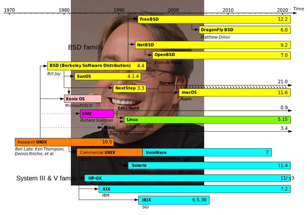
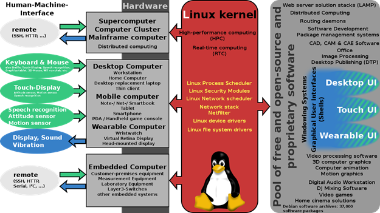

Lịch sử phát triển Unix và Linux
UNIX ra đời từ một đề án nghiên cứu Bell Labs của AT&T (Ken Thompson, Dennis Ritchie) vào năm 1969. Ban đầu hệ điều hành Unix đã được phát triển như một hệ điều hành đa nhiệm cho các máy mini và các máy lớn (mainframe) trong những năm 70. Cho đến nay, Unix đã được phát triển trở thành một hệ điều hành phổ thông trên toàn thế giới, mặc dù với giao diện chưa thân thiện và chưa được chuẩn hóa hoàn toàn. Xem thêm: https://vi.wikipedia.org/wiki/Unix
Năm 1991, nhà Khoa học máy tính Linus Torvalds cho ra đời hệ điều hành Linux dựa trên nền tảng của Unix trong dự án Linux kernel tại Đại học Helsinki. Xem thêm: https://vi.wikipedia.org/wiki/Linux

Biểu đồ lịch sử phát triển của các hệ thống tương tự Unix (Nguồn wikipedia.org)
–> Bên cạnh các hệ điều hành được phát triển dựa trên Windows NT của Microsoft, gần như mọi hệ điều hành khác đều là những “hậu duệ” của Unix.
Các bản phân phối (distro) của Linux
Các nhà phát triển sẽ kết hợp giữa Kernel của Linux và các phần mềm miễn phí khác để tạo ra các hệ điều hành hoàn chỉnh. Theo thống kê của DistroWatch thì đến hiện tại (năm 2020) có đến 274 bản phân phối Linux khác nhau đang được sử dụng trên thế giới. Tham khảo thêm tại website: https://distrowatch.com/

Những thành phần được xây dựng xung quanh một bản phân phối Linux (Nguồn wikipedia.org)

This sidebar is hidden by default, (style="display:none")
You must click on the "hamburger" icon (top left) to open it.
The sidebar will hide a part of the page content.